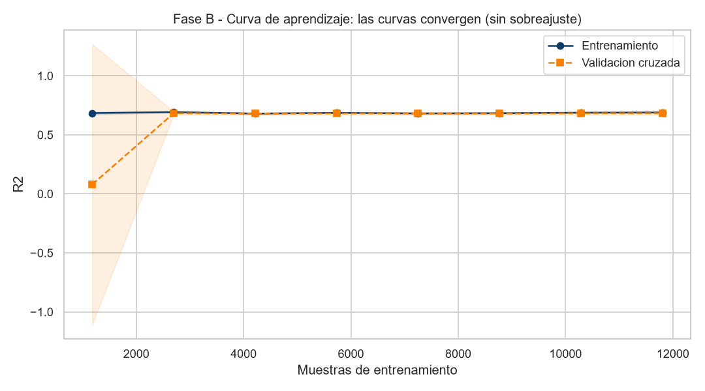

Regresión Lineal Múltiple · censo de California 1990 · 20 640 distritos · partición 75 / 25 estratificada por ingreso
Los deslizadores están acotados al rango real observado. La predicción se recalcula al mover cualquier valor.
Como el modelo predice el logaritmo del precio, cada aporte βᵢ·zᵢ se traduce en un cambio porcentual (eβᵢzᵢ − 1), no en una suma de dólares.
| Descriptor | xᵢ | μᵢ | σᵢ | zᵢ | βᵢ | βᵢ · zᵢ |
|---|
| Modelo | Términos | R² entren. | R² prueba | R² CV 5-fold | Brecha | RMSE | MAE |
|---|
Partiendo de los 8 descriptores originales (R² = 0.660), los términos derivados —razones por hogar, logaritmos y distancias a San Francisco y Los Ángeles— suben el R² de prueba a 0.694 sin abrir brecha entre entrenamiento y validación. No es sobreajuste: es reducción del sesgo. Todos son transformaciones de los datos, no del modelo, por lo que la función sigue siendo lineal en los parámetros.

La curva de aprendizaje confirma el diagnóstico: entrenamiento y validación convergen con una brecha menor a 0.01 desde unas 2 700 muestras.
| Aspecto | Tratamiento |
|---|
El descarte del target censurado es la decisión de mayor impacto: el censo registró todos los distritos por encima de $500 000 con ese mismo valor tope, lo que no es un dato real sino un artefacto administrativo que sesga sistemáticamente el ajuste en el extremo superior.